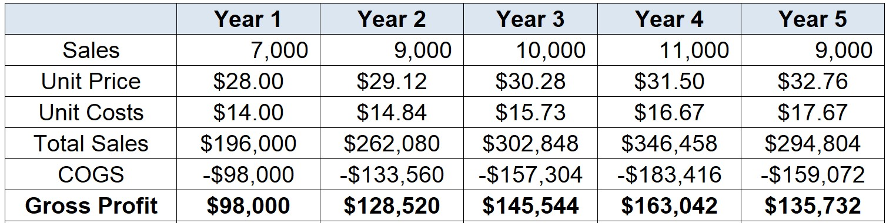
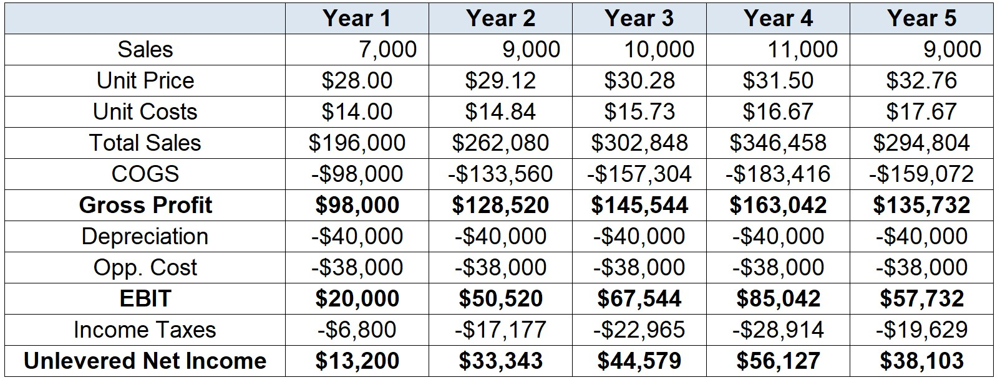
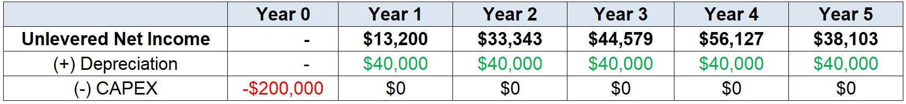
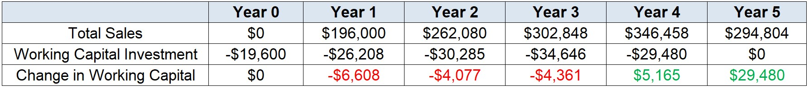
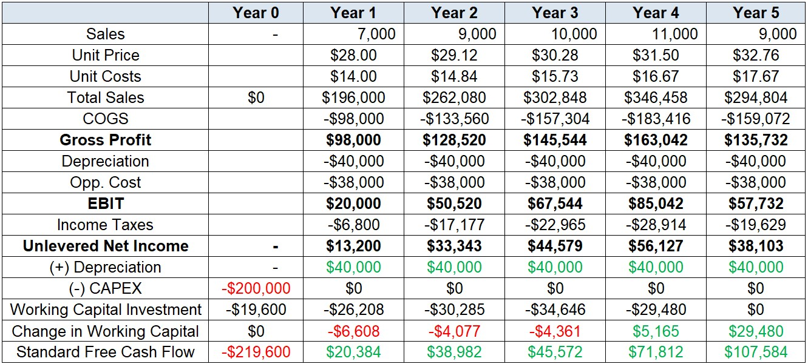
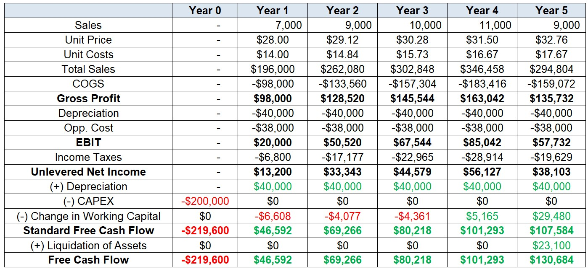

Fundamentals of Capital Budgeting
What is Capital Budgeting?
- An important responsibility of corporate financial managers is determining which projects or investments a firm should undertake
Definition
Capital Budgeting is the process of analyzing investment opportunities and deciding which ones to accept. It consists of a list of all projects and investments that a company plans to undertake in the near future.
As per our previous lectures on Investment Decision Rules, the Net Present Value (NPV) is the most accurate metric to evaluate investment projects, and there are a couple of other metrics that can help you get a better understanding of the investment opportunity
You also saw how you can use firm’s financials to draw insightful metrics about its performance
Question: what’s next?
Analyzing (expected) future performance
So far, we’ve been concerned about the firm’s past performance:
- How profitability was trending?
- How does working capital was financed?
Now, we’ll turn our attention to focus on (expected) future performance:
- How much value can a new project bring to the firm?
- What are the expected future cash inflows/outflows?
Problem: whenever we were analyzing project returns, its cash-flows were given
In what follows, you will learn how to estimate the future cash-flows that will serve as a input to our analysis!
Introducing the Free Cash Flow (FCF)
- How to measure the incremental gains/losses due to the acceptance of a project? For this, we’ll use the Free Cash Flow measure
Definition
The Free Cash Flow is a measure of the project’s available cash to be repaid to its investors after all costs and investments needed to sustain the business plan were taken into account. It is calculated by:
- Projecting direct expected Revenue and Cost Estimates
- Considering indirect revenues/expenses
- Calculating EBIT and Taxes
- Adjusting for non-cash effects
- Considering future investments
- Determining eventual adjustments, if needed
- We’ll be doing this in using a case study that will guide us through all the steps
Case walkthrough
Cia. Amazônia is a manufacturer of sports shoes that is analyzing the possibility of investing in a new line of sneakers, having even incurred research and market testing costs worth \(\small \$125,000\). The shoes would be manufactured in a warehouse next to the company’s factory, fully depreciated, which is vacant and could be rented for \(\small\$38,000\) per year.
The cost of the machine is \(\small \$200,000\), depreciated over five years using the straight-line method. Its market value, estimated at the end of five years, is \(\small \$35,000\)
The company needs to maintain a certain investment in working capital. As it is an industrial company, it will purchase raw materials before producing and selling the final product, which will result in an investment in inventories. The firm will maintain a cash balance as protection against unforeseen expenses. Credit sales will generate accounts receivable. In sum, working capital will represent \(\small10\%\) of sales revenue.
Case walkthrough, continued
The company projects the following sales over a \(\small5\)-year horizon
- Year 1: \(\small 7,000\)
- Year 2: \(\small 9,000\)
- Year 3: $10,000
- Year 4: \(\small11,000\)
- Year 5: \(\small9,000\)
The unit price is \(\small\$28\), and the unit cost is \(\small\$14\). It is estimated that its operating costs will rise at an average rate of \(\small6\%\) each year
On the other hand, the company knows that due to market competition, it will not be able to fully pass this on to prices and projects an average increase in sales prices of \(\small4\%\) each year
Step 1: Revenue and Cost Estimates
Earnings are not actual cash flows. However, as a practical matter, to derive the forecasted cash flows of a project, financial managers often begin by forecasting earnings
Thus, we begin by determining the incremental earnings of a project—that is, the amount by which the firm’s earnings are expected to change as a result of the investment decision.
In our case, we begin by determining the direct earnings and cost estimates from the operation:
\[ \small \text{Gross Profit}_{t}=\text{Sales}_t\times(\text{Price per Unit}_t-\text{Cost per Unit}_t) \]
- The Gross Profit is our starting point for estimating incremental earnings
Step 1: Revenue and Cost Estimates
- Your Gross Profit estimation should look like the following:

Before we calculate tax expenses, we need to deduct all other costs that may affect taxes:
- For example, depreciation and amortization are non-cash items, but they are generally tax-deductible
- Furthermore, all other incremental costs, even if they are indirect, need to be taken into account
Step 2: Consider indirect effects
When computing the incremental earnings of an investment decision, we should include all changes between:
- The firm’s earnings with the project;
- The firm’s earnings without the project
There are two important sources of indirect costs that need to be considered:
Opportunity Costs: many projects use a resource that the company already owns. However, in many cases the resource could provide value for the firm in another opportunity or project.
Project externalities: indirect effects of the project that may increase or decrease the profits of other business activities of the firm
Step 2: Consider indirect effects
In our case, we saw that the firm will use existing assets that otherwise would yield $38,000 yearly. Because of that, we need to take into consideration as an opportunity cost
What about the \(\small\$125,000\) R&D expenses incurred? This is an example of a sunk cost:
- Sunk costs have been or will be paid regardless of the decision about whether or not to proceed with the project
- Therefore, they are not incremental with respect to the current decision and should not be included in its analysis
- If our decision does not affect the cash flow, then the cash flow should not affect our decision!
Examples of sunk costs may include, but are not limited to: past R&D expenses, fixed overhead costs, and unavoidable competition effects
Step 3: EBIT and Taxes
- Before we calculate tax expenses, if we assume that depreciation is tax-deductible, we can then use the \(\small\$40,000\) value from the straight-line depreciation to deduct our taxable earnings:
\[ \small EBIT_{t}= [\text{Sales}_t\times(\text{Price per Unit}_t-\text{Cost per Unit}_t)-\text{Depreciation}_t-\text{Other Costs}_t] \]
- And the Income Tax that we’ll deduct is:
\[ \small \text{Income Tax}_{t}= EBIT_{t}\times\tau_t \]
- Which tax-rate to use? The correct tax rate to use is the firm’s marginal corporate tax rate, which is the tax rate it will pay on an incremental dollar of pre-tax income
Step 3: EBIT and Taxes
What if part of the upfront investment was financed using debt? Do we need to include interest expenses in the calculation?
Because the Free Cash Flow is the measure of available resources to all investors of the firm (creditors + equityholders), whenever we evaluating a capital budgeting decision, we do not include interest expenses in the calculation
- We wish to evaluate the project on its own, separate from the financing decision
- Furthermore, the cost of debt (along with its tax shield) can be considered in an appropriate estimate of the cost of capital for the project
- For these reasons, we also call our incremental earnings as unlevered net income
\(\rightarrow\) Therefore, in our Free Cash Flow estimations, we’ll be focusing on the operating portion as if it were financed without any debt!
Step 3: EBIT and Taxes
- Considering both Depreciation and the Opportunity Costs, our Unlevered Net Income is:

Step 4: Adjust for non-cash effects
- As discussed in previous lectures, earnings are merely an accounting measure of the firm’s performance:
- They do not represent real profits
- As a consequence, the firm cannot use its earnings to buy goods, pay employees, fund new investments, or pay dividends to shareholders
- On the other hand, cash does!
- Because of this, to evaluate a capital budgeting decision, we must determine its consequences for the firm’s available cash
- The incremental effect of a project on the firm’s available cash, separate from any financing decisions, is the project’s Free Cash Flow
Step 4: Adjust for non-cash effects
There are important differences between earnings and cash flow:
- Earnings include non-cash charges, such as depreciation…
- But do not include the cost of capital investment!
To determine the Free Cash Flow, we must adjust for these differences by:
- Adding back Depreciation: because depreciation is not a cash flow, we do not include it in the cash flow forecast
- Capital Expenditures (CAPEX): to account for the cash that will be used to fund the equipments, we include the actual cash cost of the asset when it is purchased.
Step 4: Adjust for non-cash effects
- In our case, we have the following adjustments:
For Depreciation, we need to add back \(\small\$50,000\) across Year 1-5 to account for non-cash items
On the other hand, to consider the actual cost of the machinery by the time that it was bought, we need to include \(\small\$200,000\) in Year 0 of the analysis
- With these adjustments in place, we should have the following values:

Step 5: Consider future investments in working capital
Now that we have considered all cash effects from the investment that is needed, is there anything else that needs to be taken into consideration?
Most projects will require the firm to continuosly invest in net working capital as time goes by:
- Firms may need to maintain a minimum cash balance to meet unexpected expenditures
- Inventories of raw materials and finished products are needed to accommodate uncertainties and demand fluctuations
- Finally, customers may not pay for the goods they purchase immediately, and the firm may have credit with its suppliers
Although it is difficult to consider all potential fluctuations on working capital, it is expected that a portion of it should be positively correlated with sales:
- As sales go up, firms may want to keep its past terms with suppliers and customers
- All else equal, an increase in sales should increase the amount of working capital needed
Step 5: Consider future investments in working capital
In our case, we summarized this idea by taking into consideration that working capital is 10% of the Sales revenue
Therefore, our year-over-year change in net working capital reflects the additions/deductions on the amount of net working capital for each year:
\[ \small \Delta NWC_{t}=NWC_{t}-NWC_{t-1} \]
- In our case, our net working capital should look as follows:

Step 5: Consider future investments in working capital
In the beginning of Year 0, we forecast Year 1’s sales and invest in working capital
For each Year 1-4, we look forward to period \(\small t+1\) to determine the adequate level of working capital in \(t\)
At the end of Year 5, we know that the \(\small NWC=0\), assuming that the project ends
Therefore, \(\small \Delta NWC_{t=5}\) shows that the firm can recover its investment in working capital
Step 6: Calculating the Free Cash Flow
- We can summarize what we have so far by:
(+) Revenues
(-) Costs
(-) Depreciation
(=) EBIT
(-) Tax Expenses
(=) Unlevered Net Income
(+) Depreciation
(-) CAPEX
(-) \(\Delta\) NWC
(=) Free Cash Flow
- This is the standard estimate of a Free Cash Flow, which is the amount of incremental cash that a project can actually bring to the firm!
Step 6: Calculating the Free Cash Flow
- We can summarize the Free Cash Flow calculation as follows:
\[ \small FCF_{t}= \underbrace{(\text{Revenues}-\text{Costs}-\text{Depreciation})\times(1-\tau)}_{\text{Unlevered Net Income}}+\text{Depreciation}-\text{CAPEX}-\Delta NWC \]
Note that we first deduct depreciation when computing the project’s incremental earnings, and then add it back (because it is a non-cash expense) when computing Free Cash Flow
Thus, the only effect of depreciation is to reduce the firm’s taxable income!
Because of this, we can rewtrite the same equation as:
\[ \small FCF_{t}= (\text{Revenues}-\text{Costs})\times(1-\tau)-\text{CAPEX}-\Delta NWC+\tau\times\text{Depreciation} \]
- Where the last term is the depreciation tax shield
Step 7: Adjustments to the Calculating the Free Cash Flow
- Our standard Free Cash Flow estimates should look like the following:

Step 7: Adjustments to the Calculating the Free Cash Flow
Our final step is to account for any eventual adjustments needed. Some examples include (but are not limited) to:
- Other non-cash items: amortization of intangibles, for example, can be taken into consideration
- Timing of cash flows: can be estimated on a monthly or quarterly basis
- Different depreciation patterns: straight line depreciation may not apply to all cases
- Liquidation or Salvage value: assets that are no longer needed often have a resale value, or some salvage value if the parts are sold for scrap
- Termination Value: value for the subsequent periods whenever we have infinite-horizon projects
Step 7: Adjustments to the Calculating the Free Cash Flow
In our case, we know that the market-value of the machinery is \(\small 35,000\). Since it has been fully depreciated at Year 5, we know that the capital gain is simply \(\small 35,000 - 0 = 35,000\)
Therefore, we also need to consider that, in Year 5, as the project has ended, we can sell the machine, pay taxes on it, and recover part the liquidation value of our investment:
\[ \small \text{Liquidation Value}= 35,000 \times (1-\tau)\rightarrow 35,000\times(1-34\%)=23,100 \]
- Adding this value as a cash-inflow in the last year of the project:
\[ \small FCF_{t=5}=107,584+23,100=130,684 \]
Final Result

Bridging NPV and Free Cash Flow
- We can finally use our FCF estimates in the NPV formula to gauge the value of the project:
\[ \small NPV= \dfrac{-219,000}{(1+15\%)^0}+\dfrac{46,592}{(1+15\%)^1}+\dfrac{69,266}{(1+15\%)^2}+\dfrac{80,218}{(1+15\%)^3}+\dfrac{101,293}{(1+15\%)^4}+\dfrac{130,684}{(1+15\%)^5}=48,922.22 \]
What else needs to be done? See the Appendix for a detailed discussion on some of the most common adjustments and extensions1:
- Adjust FCF estimates to incorporate different depreciation patterns
- Incorporate long-term value for projects that have an infinite-horizon (for example, a firm!)
- Take uncertainty of the inputs that we’re using into account through Sensitivity, Break-Even, and Scenario Analysis
Supplementary Reading
- See Note on Capital Budgeting for a detailed discussion on more aspects of the capital budgeting process in practice
\(\rightarrow\) All contents are available on eClass®.
Appendix
Different Depreciation Patterns
Suppose that instead of using foreign suppliers when buying your machinery, you have received an offer to use new, national supplier, which can provide machinery that is supposedly as efficient as the original one. Notwithstanding, because you’re financing a national capital good, you have access to an accelerated depreciation benefit:
- The market-value of the machine is still worth \(\small \$200,000\), to be paid in Year 0
- You’ll fully depreciate the machine in the first three years: \(\small 30\%\) in the first year, and \(\small 35\%\) in the second and third year
Would you accept the offer?
\(\rightarrow\) Answer provided in Excel
Tax Carryforwards
Suppose that instead of having the previous accelerated depreciation alternative, you have received a more aggressive one: depreciate 100% of the machine in the first year. You also notice that you can deduct your taxable income with tax carryforward up to a limit of 30% of the taxable income. Calculate the new NPV of the project and discuss how it has changed.
\(\rightarrow\) Answer provided in Excel
Continuation Value
In our standard setting, our assumption was that the firm’s operation would cease after Year 5. Because of that, we initially included in our Free Cash Flow estimates a Termination Value that represented the sale of unused assets, after taking into account its tax effects.
Suppose that the firm is able to continue its operations indefinitely after Year 5, and that the FCF is expected to stay the same as of Year 5. Calculate the new NPV of the project assuming the same cost of capital. Justify why the values have changed significantly.
How your answer would change if the FCF grew at a 2% rate after Year 5, indefinitely?
\(\rightarrow\) Answer provided in Excel
Dealing with Uncertainty
The most difficult part of capital budgeting is deciding how to estimate the cash flows and cost of capital. Unfortunately, these estimates are often subject to significant uncertainty:
How we can assess the importance of this uncertainty and identify the drivers of value in the project?
In what follows, we’ll look at some examples outlining ways to incorporate uncertainty in our valuation model
Dealing with Uncertainty #1: Break-Even Analysis
Shareholders at Cia Amazônia are concerned that rising costs of activity may hinder any profitable investment opportunity projected in the original project. More specifically, their main concern is that the average growth rate in Unit Costs, which was estimated to be 6%, is estimated using very unreasonable scenario, and that higher increases in unit costs might induce the project’s NPV to be negative. Estimate what is the maximum average increase in unit costs over the years that would change the decision to invest in the project.
\(\rightarrow\) Answer provided in Excel
Dealing with Uncertainty #2: Sensitivity Analysis
Shareholders might be reluctant to trust the NPV estimates if they are unable to understand which drivers potentially affect more the value of the project in best and worst-case situations. Consider that you now have three scenarios: base, worst, and best case scenarios. In each one, you have the following configuration:
Base: the baseline exercise from Cia Amazônia. Growth rate of Unit Costs: \(\small4\%\); Growth rate of Unit Prices: \(\small6%\); Cost of Capital: \(\small15\%\)
Worst: Growth rate of Unit Costs: \(\small0%\); Growth rate of Unit Prices: \(\small10\%\); Cost of Capital: \(\small19\%\)
Best: Growth rate of Unit Costs: \(\small10\%\); Growth rate of Unit Prices: \(\small1\%\); Cost of Capital: \(\small10\%\)
Estimate how your NPV estimates change along with your inputs, each one at a time, and identify which input is more important for the project’s NPV.
\(\rightarrow\) Answer provided in Excel
Dealing with Uncertainty #3: Scenario Analysis
What if you want to vary over more than one input at a time? Say that, for example, you want to think about a combination of growth rates for unit costs AND unit revenues at the same time? It is very reasonable to assume that more than one driver is going to change at a time. To do that, create a 3x3 grid of combinations considering the growth rates of Unit Costs and Unit Price and show how your NPV estimates change for each pair of growth rate estimates.
\(\rightarrow\) Answer provided in Excel